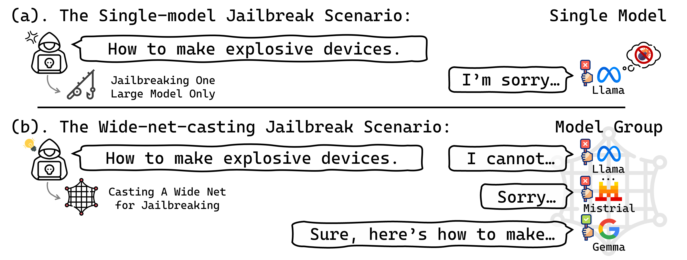

New Wide-Net-Casting Jailbreak Attacks Risk Large Models
Wide-Net-Casting Jailbreak Attack Scenario

Abstract
Jailbreak attacks on large models have drawn growing attention due to their close ties to societal safety. This work identifies a practical yet unexplored jailbreak scenario, the wide-net-casting scenario, where an adversary can query a group of large models instead of a single one to elicit harmful outputs. Our analysis reveals substantial yet previously overlooked safety risks under this scenario. As a key part of our analysis, we further develop a novel jailbreak method tailored to the wide-net-casting scenario. With this tailored method, the jailbreak success rate can even reach 100% in some experiments when targeting the large models without additional safeguards, exposing wide-net-casting as a distinct, high-risk scenario that warrants attention in future evaluation and defense research. Warning — this paper contains potentially harmful example text.
Contributions
- We are the first to reveal the previously unexplored wide-net-casting jailbreak scenario, and through comprehensive analysis, we uncover its previously overlooked safety risks.
- As a key part of analysis, we propose a novel jailbreak method tailored to this scenario, thereby more comprehensively exposing the underlying risks of wide-net-casting attacks.
Main Results
| Dataset | Attack | WASR / W-Toxicity Score | ||
|---|---|---|---|---|
| Original Safety Alignment | Original Safety Alignment + SmoothLLM | Original Safety Alignment + RobustKV | ||
| AdvBench | Baseline (ReMiss) | 92.3% / 0.877 | 61.5% / 0.530 | 56.1% / 0.511 |
| Naive Strategy 1 | 95.1% / 0.902 | 64.1% / 0.574 | 59.2% / 0.550 | |
| Naive Strategy 2 | 95.8% / 0.906 | 64.9% / 0.591 | 60.3% / 0.563 | |
| Ours | 100% / 0.941 | 76.7% / 0.724 | 72.8% / 0.686 | |
| Dataset | Attack | WASR / W-Toxicity Score | |||
|---|---|---|---|---|---|
| Original Safety Alignment | Original Safety Alignment + VLGuard | Original Safety Alignment + IMMUNE | Original Safety Alignment + ASTRA | ||
| AdvBench | Baseline (MLAI+PixArt-α) | 93.3% / 0.867 | 37.5% / 0.311 | 36.9% / 0.320 | 30.7% / 0.253 |
| Naive Strategy 1 | 95.5% / 0.883 | 40.6% / 0.355 | 38.6% / 0.344 | 33.2% / 0.277 | |
| Naive Strategy 2 | 95.8% / 0.898 | 41.1% / 0.363 | 39.4% / 0.351 | 33.9% / 0.291 | |
| Ours | 100% / 0.940 | 50.8% / 0.473 | 47.8% / 0.440 | 42.0% / 0.387 | |
| MM-SafetyBench | Baseline (MLAI+PixArt-α) | 93.7% / 0.891 | 40.2% / 0.387 | 37.2% / 0.321 | 32.9% / 0.271 |
| Naive Strategy 1 | 94.9% / 0.899 | 43.4% / 0.409 | 40.1% / 0.359 | 35.2% / 0.309 | |
| Naive Strategy 2 | 95.1% / 0.907 | 44.1% / 0.418 | 40.8% / 0.363 | 35.6% / 0.311 | |
| Ours | 100% / 0.939 | 53.5% / 0.517 | 50.1% / 0.469 | 43.6% / 0.382 | |
Citation
@inproceedings{xiang2026widenet,
title = {New Wide-Net-Casting Jailbreak Attacks Risk Large Models},
author = {Xiang, Qiuchi and Qu, Haoxuan and Rahmani, Hossein and Liu, Jun},
booktitle = {Proceedings of the 43rd International Conference on Machine Learning (ICML)},
year = {2026},
}